An app for a vet clinic with grooming in Brussels, and the dashboard the clinic runs it from. The owner wanted three things: fewer missed vaccines, fewer calls to the desk, and numbers she could actually see.
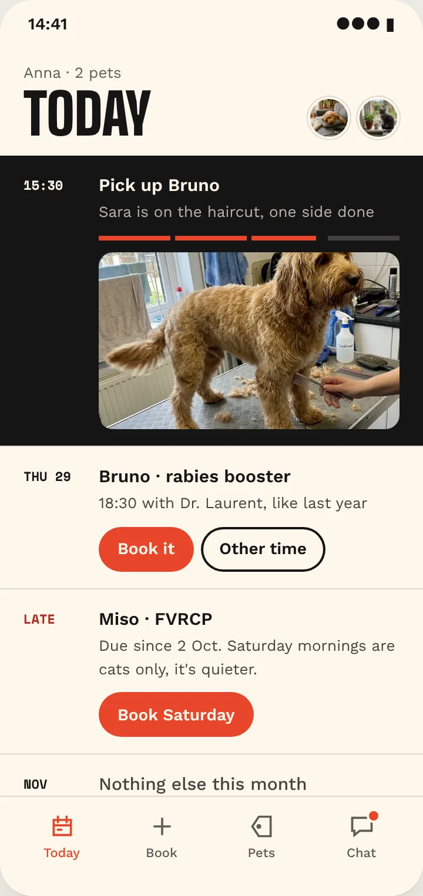
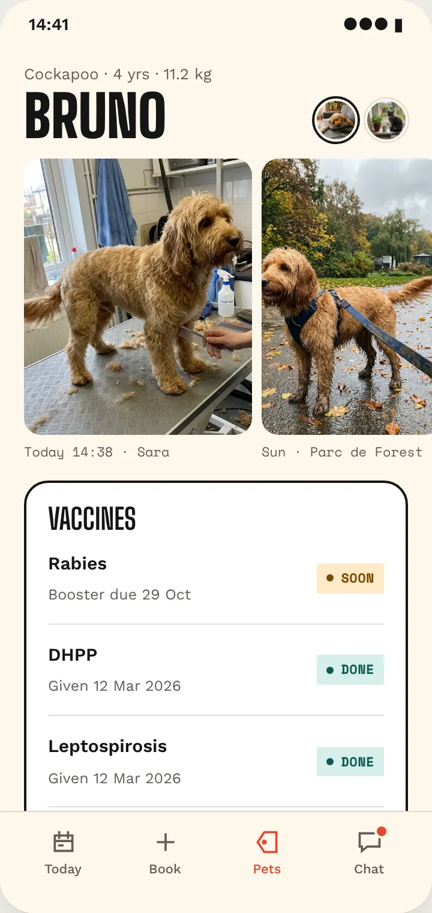
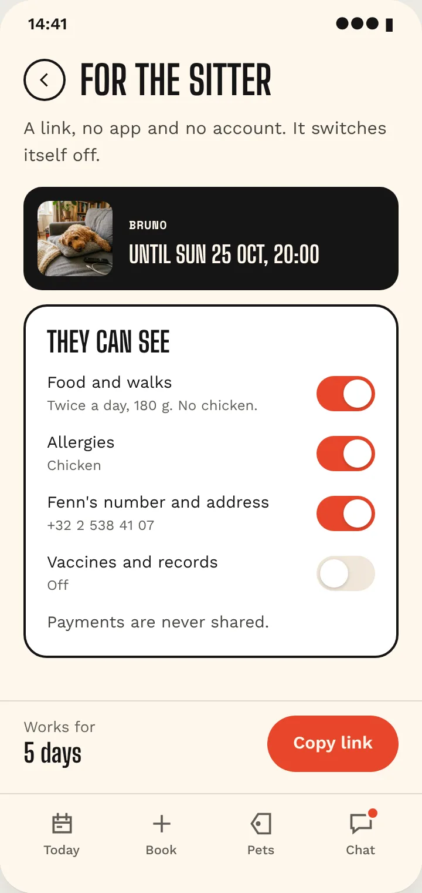
One clinic, three vets, two groomers, owners aged 25 to 45. Booking was by phone only.
Clients don't come back for boosters, and every missed one is a lost visit.
The desk is overloaded and people don't turn up.
"Is he ready yet?" during every grooming.
The owner can't see which services earn or how busy the team is.
PetDesk, Petla and Vets4Pets all open on either the next visit or a menu of features. MoeGo sends groomer photos as a one-off report. Nobody shows the whole day across all your pets, and nobody keeps the clinic's photos next to your own. That gap became the app.
| App | Home screen | What we took or left |
|---|---|---|
| PetDesk | Reminders, records, loyalty points | Kept automatic reminders, dropped points |
| Petla | Next appointment first | Replaced with a plan for the whole day |
| MoeGo | Report card with photos | Turned photos into the pet's diary |
Based on store listings and the companies' own pages, not on hands-on testing.
The first version was calm and correct, and it looked like a hundred other apps. The second went bold, with a colour per pet and a huge name, but the card was louder than the information. The fourth version drops the hero card entirely.
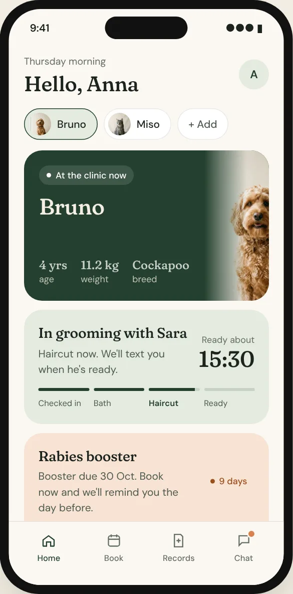
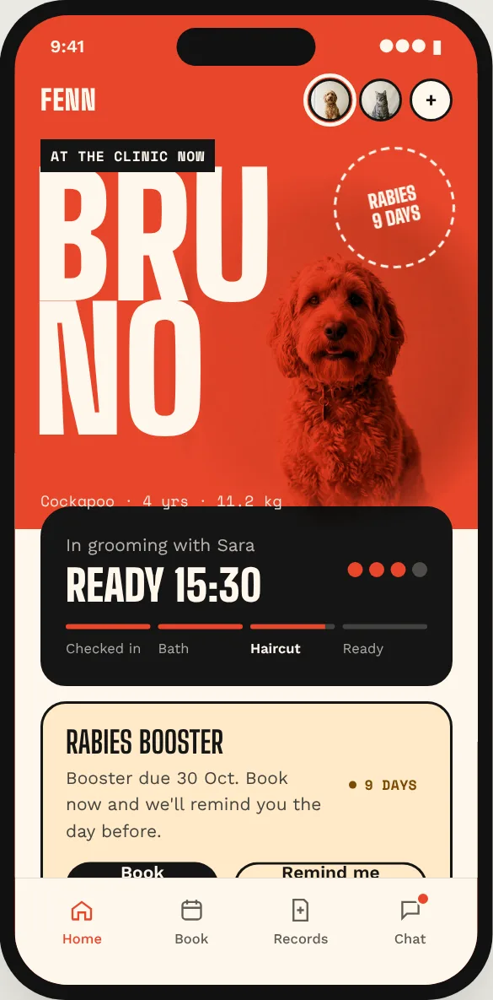
Bruno has come on Thursdays at 18:30 three times. One tap books the booster with the same vet at the same time, and skips two of three steps.
Food, allergies and the clinic's number for whoever looks after the pet. No app, no account, and it stops working on Sunday night.
Sara's photo from the grooming table sits next to Anna's from the park. It gives people a reason to open the app when nothing is due.
Service, time, check, done. Crossed-out slots are taken, Sara's Wednesday finish is shown before you pick, and the confirmation tells you which door to use.
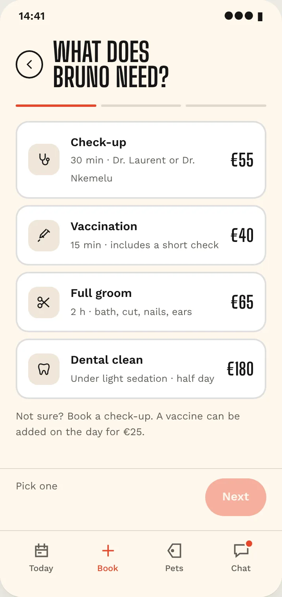
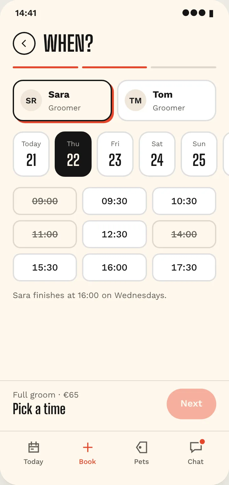
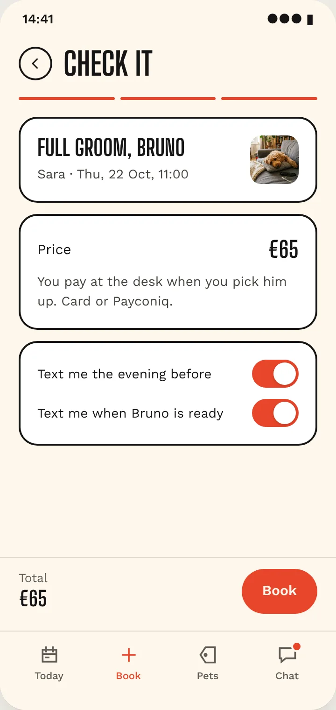
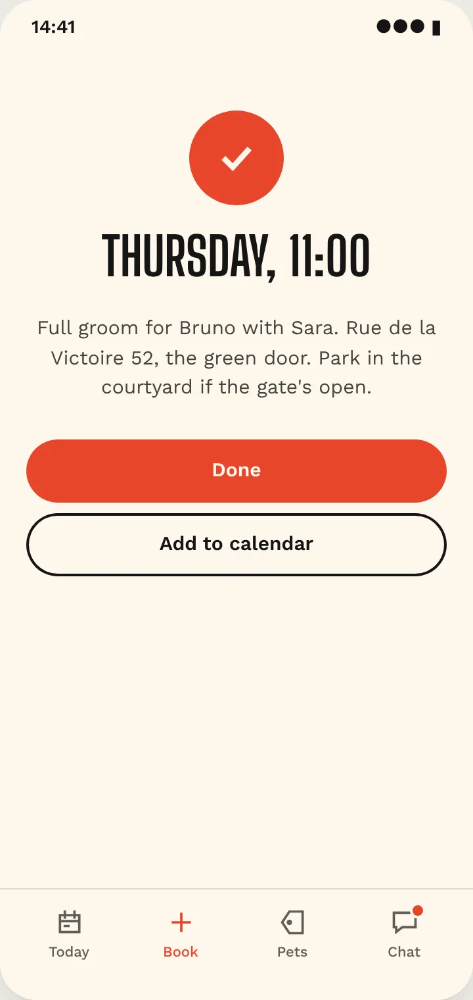
The visit reads like a delivery. Each step comes with a note from Sara and a photo halfway through, and the chat answers what was actually asked. When she's busy, Inès from the desk replies.
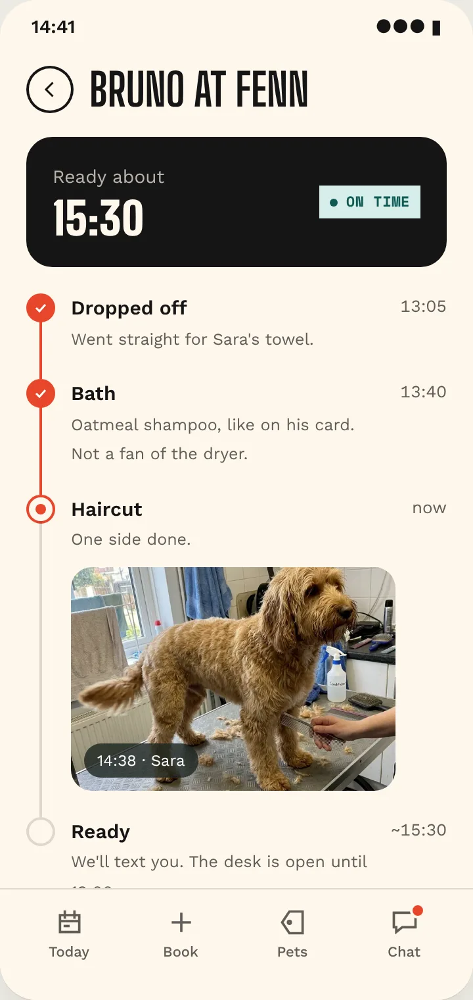
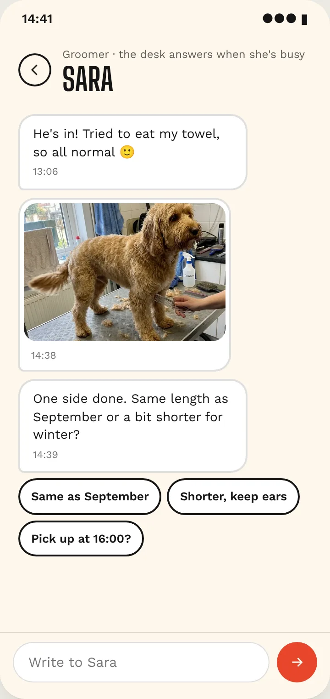
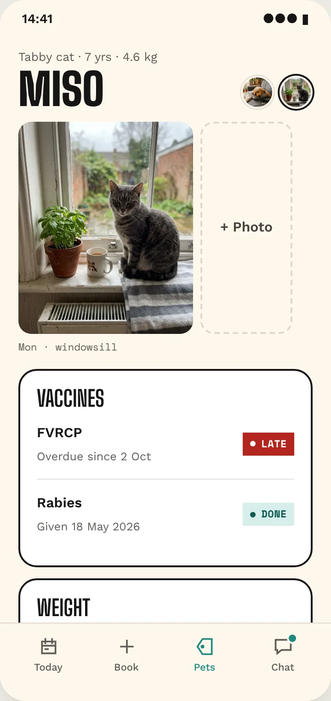
A first launch, a slow network, no connection. Each one has its own screen and tells you what is kept and what to do.
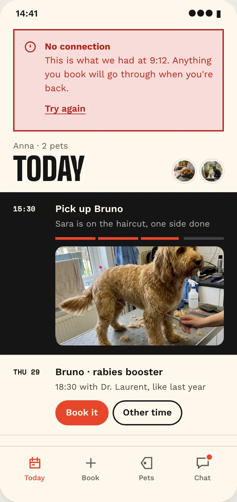
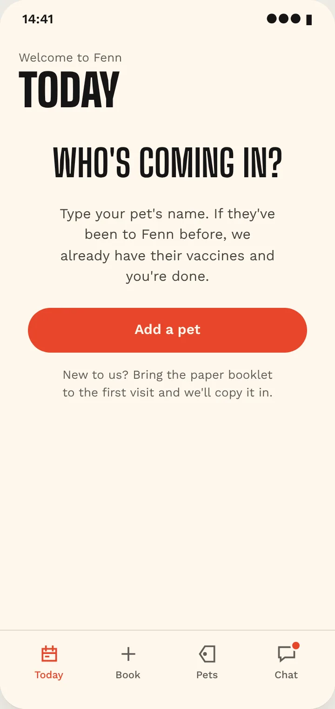
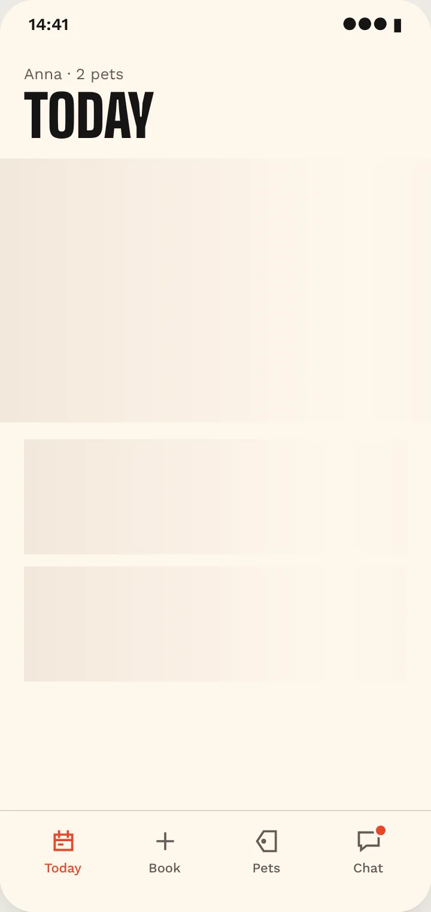
Same palette on a hard grid, like signs in a hospital corridor. The numbers are uneven on purpose: a −4% day because two dentals were cancelled, a client with no app who gets a "Call" button instead of "Send", a vet away at a training.
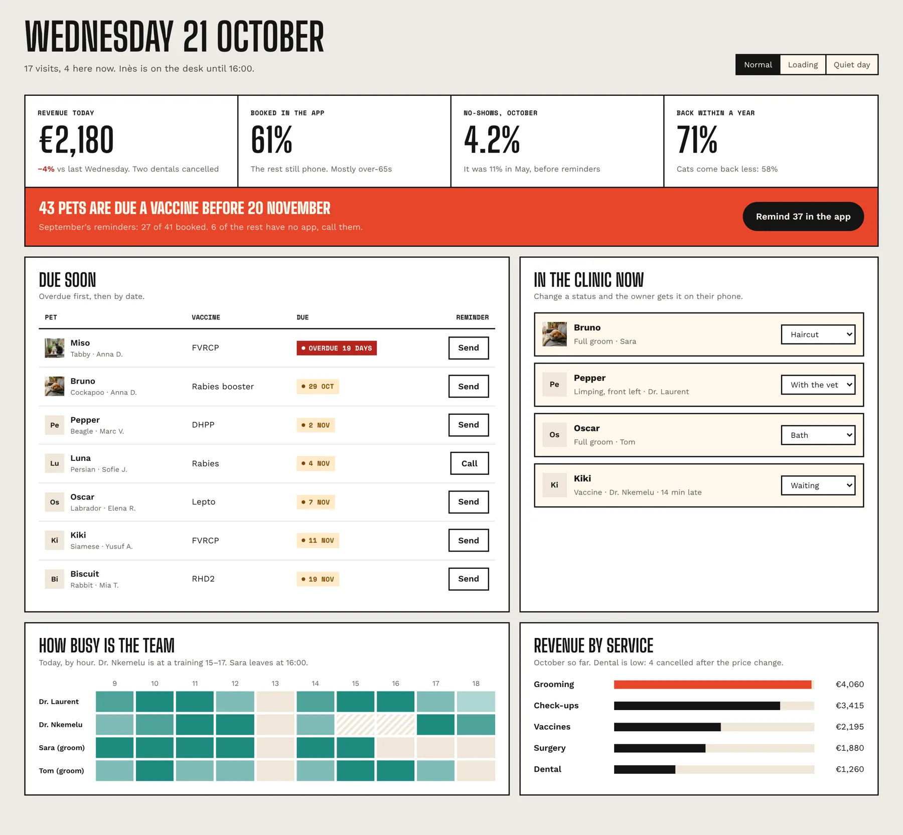
Pet colours mean "whose card this is" and are never used for status. The pet moves with a slight overshoot, like a tail. The clinic moves straight and stops. Vets write short; the groomer is allowed one emoji.
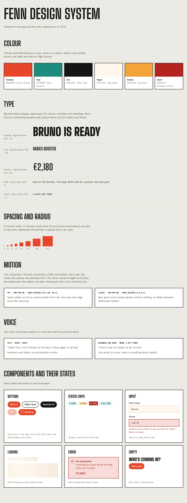
A concept for my portfolio, not a live client. The clinic, people and numbers are made up. The pet photos are generated and written to look like phone snaps; a real project would use the clinic's own photos.